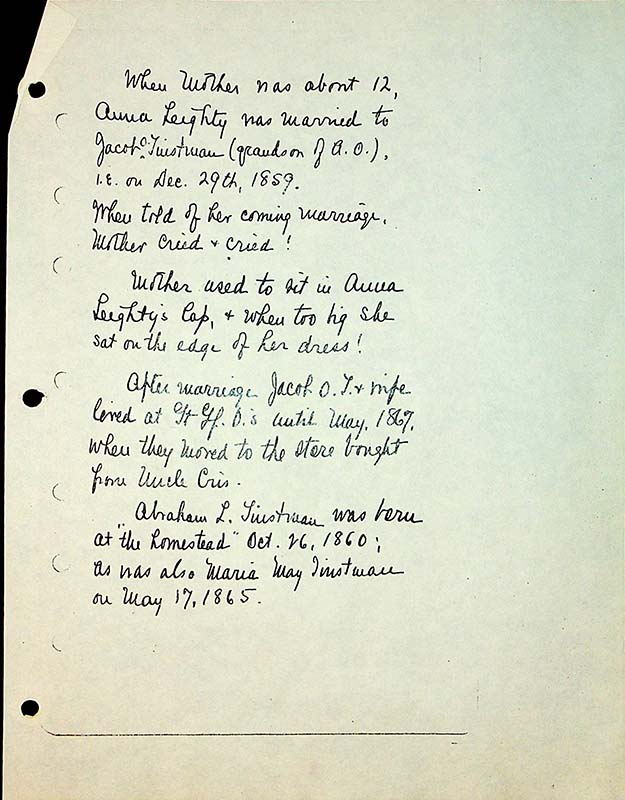

When Mother was about 12, Anna Leighty was married to Jacob O. Tinstman (grandson of A.O. ) I.E. on Dec. 29th, 1859
When told of her coming marriage, mother cried and cried!
Mother used to sit in Anna Leighty’s lap & when too big she sat on the edge of her dress! After marriage, Jacob O.T. & wife lived at GT Gf O’s until May 1869, when they moved to the store bought from Uncle Cris.
Abraham L. Tinstman was born at the homestead Oct 26, 1860; as was also Maria May Tinstman on May 17, 1865.